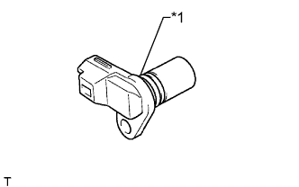

ДАТЧИК ПОЛОЖЕНИЯ РАСПРЕДВАЛА > УСТАНОВКА |
| 1. УСТАНОВИТЕ ДАТЧИК ПОЛОЖЕНИЯ РАСПРЕДВАЛА |
|  |
Нанесите тонкий слой моторного масла на кольцевое уплотнение датчика положения распредвала.
| *1 | Кольцевое уплотнение |
Установите датчик положения распредвала и закрепите его болтом.
Подсоедините разъем датчика положения распредвала.